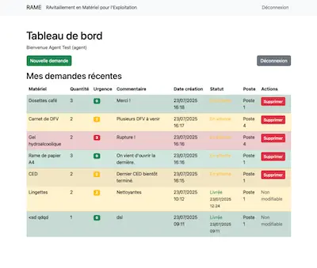

Étude de Cas : Création d'une Application Métier
Optimiser la Communication et la Traçabilité par la Technologie.

← Retour aux études de cas
Le Contexte
Le processus de demande de fournitures au sein de la SNCF reposait sur des canaux informels (oral, SMS, email), entraînant une perte d'information, des demandes en double et une absence de suivi centralisé pour les responsables.
Mon Rôle
Sur mon temps personnel, j'ai agi en tant que Product Owner et Développeur pour concevoir et créer une solution pragmatique à ce problème concret.
Ma Démarche
- Analyse du Besoin : J'ai identifié les "points de douleur" des agents et des responsables pour définir les fonctionnalités essentielles : un formulaire de demande unique, un tableau de bord de suivi et des statuts clairs.
- Développement Full-Stack : J'ai développé l'application en Python, en créant un back-end pour gérer la logique et les données, et une interface web simple pour l'interaction utilisateur.
- Fonctionnalités Clés : Gestion des comptes (agent/responsable), formulaire de création/modification/suppression, tableau de bord avec statuts visuels (demandé, en livraison, livré).
Résultats
- Un prototype fonctionnel développé et proposé en interne.
- Démonstration d'un impact potentiel : gain de temps pour les responsables et visibilité accrue pour les agents.
- Mise en pratique de mes compétences en Python , analyse des besoins et développement rapide.